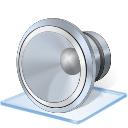

かならずお読みください →

しゃべる文字盤のつくりかた
TIPS_2 音をならす方法

コミュニケーションエイドの取り組みは操作スイッチ選びから始まります。 スイッチを選ぶ際のポイントは以下のようになります。
１ 操作が楽にできるか
２ 十分長い時間操作を維持できるか
３ タイミングよく操作できるか
例えばスキャン入力方式のコミュニケーションエイドは動きや力の量が十分でないところを動作の質でカバーするという基本原理です。そのため使いこなすには機敏さやタイミングの良さがある程度必要になります。ところがなかには普通にスイッチを使えるけれど、タイミングよくやろうとすると緊張？のためかうまくいかないひともおられますので注意が必要です。
このような場合は、スキャン時間間隔を大きく（ゆっくり動くようにする、これについてはＴＩＰＳ４で解説する予定です）するほかに、スキャンのタイミングに合わせて音を出すとうまくいきやすくなります。音を利用してタイミングを合わせやすくする例として、時報の予鈴、（ドドドソーの3つのド）、スタート号砲まえの『位置について、用意』などがあります。
この他、しびれなどによりスイッチの手応えがはっきりしない、押したか押してないかご自分でもよくわからないこともあります。自分では押したはずなのに押せていない、押していないはずなのに押してしまった。一回押すところを二回押してしまった。これらがあまりに多いと、コミュニケーションエイドを使う練習がうまく進まなくなります。教えている方も辛いですが、取り組んでいる方もかなり辛い思いをされます。ついつい前向きな気持ちが消えそうになることもありますので注意が必要です。 この様な場合にも、スイッチに合わせて音が出ると意識と動作のギャップを理解しやすくなります。
動作に余裕がある場合には、操作音やクリック感の大きなスイッチを選びたいところですが、力が足りない人にはそのようなスイッチを操作できないことも多いようです。そこでスイッチは操作しやすさを優先して選び、操作音はソフトウエアで出して知らせることで、間違いや勘違いを防ぎ、操作方法の理解を助ける効果をねらうことができます。 もし音が聞こえにくい場合には、画面表示（例えば画面の明滅）で視覚的に知らせるとよいかもしれません。その場合TIPS1の説明が役に立つでしょう。
TIPS2では、このような用途に利用する、音について説明します。
基本的にExcelVBAそれ自身には音を出す機能はありません。
しかし、『VBA 音を鳴らす』（複数のキーワードの間にスペースを入れると、それらすべてのキーワードが含まれる項目の検索が可能）と検索すると、いくつかの方法があることがわかります。しゃべる文字盤ではそれらの方法のひとつ、WindowsAPI関数（Windowsが備えている機能）のひとつPlaySoundを利用してExcelからwavファイルを再生し音を鳴らしています。 wavファイルは音が記録されたファイルです。マイクとWindowsに付属のアクセサリ、サウンドレコーダを使えば録音してwavファイルを作れます。このようにすると比較的簡単にさまざまな音が自由に再生できるようになります。（wavファイルの作り方は、こちらも参考になさってください）
また、WindowsAPIにはこの他にも機能がいろいろありますので応用はさらに広がるでしょう。
PlaySoundなどのWindowsAPI関数を使うためには、VBAのプログラムの文頭にそのことを書いておきます。これをモジュール宣言といいます。しゃべる文字盤ではこのようにWindowsの機能をエクセルから利用しています。
Declare Function PlaySound Lib "winmm.dll" Alias "PlaySoundA" _ (ByVal lpszName As String, ByVal hModule As Long, ByVal dwFlags As Long) As Long .....中略..... PlaySound "c:\Windows\Media\Windows Pop-up Blocked.wav", 0, 11-2行 PlaySoundの宣言文です。
6行 文中での利用例です。Ｗｉｎｄｏｗｓのシステム音『ポッ』を非同期で鳴らします。
使い方
PlaySound 引数1， 引数2， 引数3
引数1 ： wavファイル名フルパスで指定
引数2 ： 通常0
引数3 ： 0 同期：音が出ている間プログラムが停止し音が止まると再開します。他の操作が一切できません。
1 非同期：音が出ている間でもプログラムが動きます。
8 音を繰り返し出します。
160 音を止めます。
この文ではごく概要のみ説明しました。もっと詳しく知りたいときは、VBA PlaySound で検索してください。
まとめ
今回は、WindowsAPI関数を利用して、エクセルからWindowsの機能を利用する事例として、音を鳴らす方法をご紹介しました。 この方法で、短い音から長い音、音楽、歌、物語、台詞、言葉などが出せるようになります。 コミュニケーションエイドでは、音の用途はごく限られていますが、もしVOCAのようなものを作る際にこの様な方法が使えると思います。
しゃべる文字盤、TIP編の二番目は、テーマが 耳 でした。
2014/6/14 公開研究企画課リハ工学科にもどる